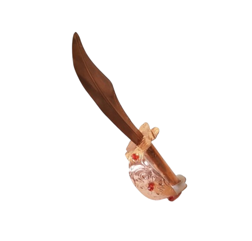
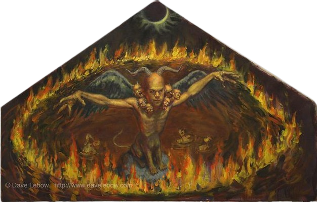

KILLER PROFILE
CRIME SCENE EVIDENCE

REPERTO A: SPADA ALFA E OMEGA
REPERTO B: IL DIPINTOLa sesta stagione trascina Dexter Morgan in un territorio inesplorato: quello della fede, del fanatismo religioso e della follia psicotica. Miami diventa il teatro di una serie di delitti biblici e spettacolari che seminano il panico nell'opinione pubblica. Il dipartimento della Miami Metro PD si ritrova a inseguire il Doomsday Killer (DDK), un assassino convinto che la fine del mondo sia imminente e che sia suo sacro dovere accelerare l'avvento dell'Apocalisse attraverso una scia di sacrifici rituali.
Travis Marshall si presenta inizialmente come un ragazzo timido, tormentato e apparentemente innocuo, che lavora come restauratore di antichi manoscritti. Travis sembra agire sotto il controllo totale e carismatico del Professor James Gellar, un ex docente di teologia radicale e ossessionato dalle profezie bibliche. Dexter, affascinato dal contrasto tra la fragilità di Travis e la violenza dei suoi quadri viventi, cerca di salvarlo dall'influenza del professore, sperando di trovare in lui un esempio di redenzione dall'Oscuro Passeggero.
Tuttavia, l'indagine subisce un colpo di scena agghiacciante quando Dexter scopre la verità: il Professor Gellar è morto da anni, ucciso proprio da Travis. Il professore non è altro che una proiezione della mente dissociata del ragazzo, la personificazione della sua parte più spietata e fanatica. Travis è il solo e unico carnefice, un profeta folle che usa la religione per giustificare il proprio sadismo e che trasforma le sue vittime in installazioni artistiche di morte.
La firma del Doomsday Killer è la teatralità assoluta, progettata per essere vista, fotografata e interpretata come un messaggio divino.
I Quadri dell'Apocalisse: Ogni omicidio rappresenta una piaga biblica. Travis espone i corpi in luoghi pubblici: i quattro cavalieri dell'apocalisse assemblati unendo pezzi di cadaveri e manichini per le strade, una donna sospesa con ali di locusta, o il rilascio di gas tossico estratto dalle vittime.
La Purificazione Forense: Prima di essere sacrificate, le vittime vengono tenute prigioniere nei sotterranei di una chiesa abbandonata, dove vengono lavate e marchiate con simboli alfa e omega. Questo processo elimina quasi ogni traccia forense utilizzabile dalla polizia.
La Spada dell'Angelo: Per i suoi sacrifici finali, Travis utilizza un'antica spada cerimoniale rubata dall'università, lo strumento sacro con cui intende versare il sangue degli "infedeli" per aprire i sigilli dell'Apocalisse.
La caccia si conclude sul tetto di un grattacielo durante un'eclissi solare, il palcoscenico perfetto scelto da Travis per il suo ultimo sacrificio. Spogliato dei suoi deliri di divinità, Travis finirà sul tavolo di plastica di Dexter, allestito proprio all'interno della sua chiesa sconsacrata. Ma sarà proprio questo atto di giustizia privata a far crollare definitivamente il muro di segreti che proteggeva l'Oscuro Passeggero.
"Questo è l'inizio della fine. E tu ne farai parte."